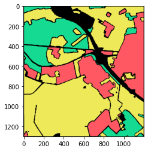

PolSAR Oberpfaffenhofen example¶
Download the dataset from esa official website.
Ground truth can be found at this github repository.
Dataset¶
First we open the dataset
[1]:
from pathlib import Path
import scipy.io
import numpy as np
import spectral.io.envi as envi
from cvnn.utils import standarize, randomize
raw_labels = scipy.io.loadmat('/media/barrachina/data/datasets/PolSar/Oberpfaffenhofen/Label_Germany.mat')['label']
path = Path('/media/barrachina/data/datasets/PolSar/Oberpfaffenhofen/ESAR_Oberpfaffenhofen_T6/Master_Track_Slave_Track/T6')
T = np.zeros(raw_labels.shape + (21,), dtype=complex)
T[:, :, 0] = standarize(envi.open(path / 'T11.bin.hdr', path / 'T11.bin').read_band(0))
T[:, :, 1] = standarize(envi.open(path / 'T22.bin.hdr', path / 'T22.bin').read_band(0))
T[:, :, 2] = standarize(envi.open(path / 'T33.bin.hdr', path / 'T33.bin').read_band(0))
T[:, :, 3] = standarize(envi.open(path / 'T44.bin.hdr', path / 'T44.bin').read_band(0))
T[:, :, 4] = standarize(envi.open(path / 'T55.bin.hdr', path / 'T55.bin').read_band(0))
T[:, :, 5] = standarize(envi.open(path / 'T66.bin.hdr', path / 'T66.bin').read_band(0))
T[:, :, 6] = standarize(envi.open(path / 'T12_real.bin.hdr', path / 'T12_real.bin').read_band(0) + \
1j * envi.open(path / 'T12_imag.bin.hdr', path / 'T12_imag.bin').read_band(0))
T[:, :, 7] = standarize(envi.open(path / 'T13_real.bin.hdr', path / 'T13_real.bin').read_band(0) + \
1j * envi.open(path / 'T13_imag.bin.hdr', path / 'T13_imag.bin').read_band(0))
T[:, :, 8] = standarize(envi.open(path / 'T14_real.bin.hdr', path / 'T14_real.bin').read_band(0) + \
1j * envi.open(path / 'T14_imag.bin.hdr', path / 'T14_imag.bin').read_band(0))
T[:, :, 9] = standarize(envi.open(path / 'T15_real.bin.hdr', path / 'T15_real.bin').read_band(0) + \
1j * envi.open(path / 'T15_imag.bin.hdr', path / 'T15_imag.bin').read_band(0))
T[:, :, 10] = standarize(envi.open(path / 'T16_real.bin.hdr', path / 'T16_real.bin').read_band(0) + \
1j * envi.open(path / 'T16_imag.bin.hdr', path / 'T16_imag.bin').read_band(0))
T[:, :, 11] = standarize(envi.open(path / 'T23_real.bin.hdr', path / 'T23_real.bin').read_band(0) + \
1j * envi.open(path / 'T23_imag.bin.hdr', path / 'T23_imag.bin').read_band(0))
T[:, :, 12] = standarize(envi.open(path / 'T24_real.bin.hdr', path / 'T24_real.bin').read_band(0) + \
1j * envi.open(path / 'T24_imag.bin.hdr', path / 'T24_imag.bin').read_band(0))
T[:, :, 13] = standarize(envi.open(path / 'T25_real.bin.hdr', path / 'T25_real.bin').read_band(0) + \
1j * envi.open(path / 'T25_imag.bin.hdr', path / 'T25_imag.bin').read_band(0))
T[:, :, 14] = standarize(envi.open(path / 'T26_real.bin.hdr', path / 'T26_real.bin').read_band(0) + \
1j * envi.open(path / 'T26_imag.bin.hdr', path / 'T26_imag.bin').read_band(0))
T[:, :, 15] = standarize(envi.open(path / 'T34_real.bin.hdr', path / 'T34_real.bin').read_band(0) + \
1j * envi.open(path / 'T34_imag.bin.hdr', path / 'T34_imag.bin').read_band(0))
T[:, :, 16] = standarize(envi.open(path / 'T35_real.bin.hdr', path / 'T35_real.bin').read_band(0) + \
1j * envi.open(path / 'T35_imag.bin.hdr', path / 'T35_imag.bin').read_band(0))
T[:, :, 17] = standarize(envi.open(path / 'T36_real.bin.hdr', path / 'T36_real.bin').read_band(0) + \
1j * envi.open(path / 'T36_imag.bin.hdr', path / 'T36_imag.bin').read_band(0))
T[:, :, 18] = standarize(envi.open(path / 'T45_real.bin.hdr', path / 'T45_real.bin').read_band(0) + \
1j * envi.open(path / 'T45_imag.bin.hdr', path / 'T45_imag.bin').read_band(0))
T[:, :, 19] = standarize(envi.open(path / 'T46_real.bin.hdr', path / 'T46_real.bin').read_band(0) + \
1j * envi.open(path / 'T46_imag.bin.hdr', path / 'T46_imag.bin').read_band(0))
T[:, :, 20] = standarize(envi.open(path / 'T56_real.bin.hdr', path / 'T56_real.bin').read_band(0) + \
1j * envi.open(path / 'T56_imag.bin.hdr', path / 'T56_imag.bin').read_band(0))
print("T shape " + str(T.shape) + "; labels shape " + str(raw_labels.shape))
T shape (1300, 1200, 21); labels shape (1300, 1200)
See the ground truth was correctly opened:
[2]:
import matplotlib.pyplot as plt
import tikzplotlib
def show_ground_truth(labels, savefile=None):
colors = np.array([
[1, 0.349, 0.392],
[0.086, 0.858, 0.576],
[0.937, 0.917, 0.352]
])
ground_truth = np.zeros(labels.shape + (3,), dtype=float)
for i in range(labels.shape[0]):
for j in range(labels.shape[1]):
if labels[i, j] != 0:
ground_truth[i, j] = colors[labels[i, j] - 1]
plt.imshow(ground_truth)
plt.show()
if savefile is not None:
savefile = Path(savefile)
plt.imsave(savefile / "ground_truth.pdf", ground_truth)
tikzplotlib.save(savefile / "ground_truth.tex")
show_ground_truth(raw_labels)

Preprocess dataset
[3]:
def remove_unlabeled(x, y):
mask = y != 0
return x[mask], y[mask]
T, labels = remove_unlabeled(T, raw_labels) # Remove unlabaled pixels
labels -= 1 # map [1, 3] to [0, 2]
[4]:
labels.shape
[4]:
(1311618,)
Separate Test, Train and validation
[5]:
from cvnn.dataset import Dataset
def separate_train_test(x, y, ratio=0.1):
classes = set(y)
x_ordered_database = []
y_ordered_database = []
for cls in classes:
mask = y == cls
x_ordered_database.append(x[mask])
y_ordered_database.append(y[mask])
len_train = int(y.shape[0]*ratio/len(classes))
x_train = x_ordered_database[0][:len_train]
x_test = x_ordered_database[0][len_train:]
y_train = y_ordered_database[0][:len_train]
y_test = y_ordered_database[0][len_train:]
for i in range(len(y_ordered_database)):
assert (y_ordered_database[i] == i).all()
assert len(y_ordered_database[i]) == len(x_ordered_database[i])
if i != 0:
x_train = np.concatenate((x_train, x_ordered_database[i][:len_train]))
x_test = np.concatenate((x_test, x_ordered_database[i][len_train:]))
y_train = np.concatenate((y_train, y_ordered_database[i][:len_train]))
y_test = np.concatenate((y_test, y_ordered_database[i][len_train:]))
x_train, y_train = randomize(x_train, y_train)
x_test, y_test = randomize(x_test, y_test)
return x_train, y_train, x_test, y_test
T_rand, labels_rand = randomize(T, labels)
x_train, y_train, x_test, y_test = separate_train_test(T_rand, labels_rand, ratio=0.1)
x_train, y_train, x_val, y_val = separate_train_test(x_train, y_train, ratio=0.8)
y_train = Dataset.sparse_into_categorical(y_train)
y_test = Dataset.sparse_into_categorical(y_test)
y_val = Dataset.sparse_into_categorical(y_val)
dataset = Dataset(x_train.astype(np.complex64), y_train, dataset_name='Oberpfaffenhofen')
print("Sizes:\n\t- Train shape: " + str(x_train.shape) + "\n\t- Test shape: " + str(x_test.shape) + "\n\t- Validation shape: " + str(x_val.shape))
Sizes:
- Train shape: (104928, 21)
- Test shape: (1180458, 21)
- Validation shape: (26232, 21)
For training we use the same number of class examples for train and validation set
[6]:
def get_number_of_each_class(x, name):
x = np.array(x)
x = Dataset.categorical_to_sparse(x)
print(name + " set")
for cls in range(min(x), max(x)+1):
print("\t" + str(np.sum(x == cls)) + " examples of class " + str(cls))
get_number_of_each_class(y_train, "Train")
get_number_of_each_class(y_test, "Test")
get_number_of_each_class(y_val, "Validation")
Train set
34976 examples of class 0
34976 examples of class 1
34976 examples of class 2
Test set
284331 examples of class 0
202953 examples of class 1
693174 examples of class 2
Validation set
8744 examples of class 0
8744 examples of class 1
8744 examples of class 2
Training¶
[ ]:
Select Hyper-parameters
[7]:
from cvnn.layers import Dense
from cvnn import layers
shape_raw = [50, 50]
input_size = dataset.x.shape[1] # Size of input
output_size = dataset.y.shape[1] # Size of output
layers.ComplexLayer.last_layer_output_dtype = None
layers.ComplexLayer.last_layer_output_size = None
if len(shape_raw) == 0:
print("No hidden layers are used. activation and dropout will be ignored")
shape = [
Dense(input_size=input_size, output_size=output_size, activation='softmax_real',
input_dtype=np.complex64, dropout=None)
]
else: # len(shape_raw) > 0:
shape = [Dense(input_size=input_size, output_size=shape_raw[0], activation='cart_relu',
input_dtype=np.complex64, dropout=0.5)]
for i in range(1, len(shape_raw)):
shape.append(Dense(output_size=shape_raw[i], activation='cart_relu', dropout=0.5))
shape.append(Dense(output_size=output_size, activation='softmax_real', dropout=None))
[14]:
from cvnn.cvnn_model import CvnnModel
from tensorflow.keras.losses import categorical_crossentropy
complex_network = CvnnModel(name="complex_network", shape=shape, loss_fun=categorical_crossentropy, optimizer='sgd', verbose=False, tensorboard=False)
complex_network.fit(dataset.x, dataset.y, validation_data = (x_val.astype(np.complex64), y_val), epochs = 200, batch_size=100, verbose=2, save_csv_history=True)
Epoch 1/200
1050/Unknown - 1s 968us/step - loss: 0.2360 - accuracy: 0.9300 - val_loss: 0.3063 - val_accuracy: 0.8875
Epoch 2/200
1050/1050 [==============================] - 1s 613us/step - loss: 0.2090 - accuracy: 0.9200 - val_loss: 0.2943 - val_accuracy: 0.8868
Epoch 3/200
1050/1050 [==============================] - 1s 639us/step - loss: 0.3087 - accuracy: 0.8800 - val_loss: 0.2925 - val_accuracy: 0.8879
Epoch 4/200
1050/1050 [==============================] - 1s 597us/step - loss: 0.2778 - accuracy: 0.8700 - val_loss: 0.2893 - val_accuracy: 0.8915
Epoch 5/200
1050/1050 [==============================] - 1s 631us/step - loss: 0.3104 - accuracy: 0.8700 - val_loss: 0.3285 - val_accuracy: 0.8782
Epoch 6/200
1050/1050 [==============================] - 1s 628us/step - loss: 0.2151 - accuracy: 0.9100 - val_loss: 0.2829 - val_accuracy: 0.8939
Epoch 7/200
1050/1050 [==============================] - 1s 609us/step - loss: 0.2457 - accuracy: 0.9100 - val_loss: 0.2879 - val_accuracy: 0.8918
Epoch 8/200
1050/1050 [==============================] - 1s 611us/step - loss: 0.2393 - accuracy: 0.9000 - val_loss: 0.2885 - val_accuracy: 0.8900
Epoch 9/200
1050/1050 [==============================] - 1s 601us/step - loss: 0.2586 - accuracy: 0.9000 - val_loss: 0.2832 - val_accuracy: 0.8938
Epoch 10/200
1050/1050 [==============================] - 1s 600us/step - loss: 0.3311 - accuracy: 0.8500 - val_loss: 0.2898 - val_accuracy: 0.8928
Epoch 11/200
1050/1050 [==============================] - 1s 643us/step - loss: 0.1708 - accuracy: 0.9200 - val_loss: 0.2857 - val_accuracy: 0.8928
Epoch 12/200
1050/1050 [==============================] - 1s 626us/step - loss: 0.1962 - accuracy: 0.9200 - val_loss: 0.2849 - val_accuracy: 0.8935
Epoch 13/200
1050/1050 [==============================] - 1s 588us/step - loss: 0.2393 - accuracy: 0.8900 - val_loss: 0.2955 - val_accuracy: 0.8874
Epoch 14/200
1050/1050 [==============================] - 1s 619us/step - loss: 0.3850 - accuracy: 0.8500 - val_loss: 0.2904 - val_accuracy: 0.8892
Epoch 15/200
1050/1050 [==============================] - 1s 615us/step - loss: 0.2327 - accuracy: 0.9000 - val_loss: 0.2902 - val_accuracy: 0.8922
Epoch 16/200
1050/1050 [==============================] - 1s 661us/step - loss: 0.3237 - accuracy: 0.8900 - val_loss: 0.3008 - val_accuracy: 0.8881
Epoch 17/200
1050/1050 [==============================] - 1s 618us/step - loss: 0.2163 - accuracy: 0.9200 - val_loss: 0.2847 - val_accuracy: 0.8937
Epoch 18/200
1050/1050 [==============================] - 1s 647us/step - loss: 0.2519 - accuracy: 0.8800 - val_loss: 0.2795 - val_accuracy: 0.8952
Epoch 19/200
1050/1050 [==============================] - 1s 664us/step - loss: 0.3139 - accuracy: 0.8800 - val_loss: 0.2862 - val_accuracy: 0.8918
Epoch 20/200
1050/1050 [==============================] - 1s 634us/step - loss: 0.3106 - accuracy: 0.9000 - val_loss: 0.2825 - val_accuracy: 0.8947
Epoch 21/200
1050/1050 [==============================] - 1s 649us/step - loss: 0.3095 - accuracy: 0.8200 - val_loss: 0.2855 - val_accuracy: 0.8943
Epoch 22/200
1050/1050 [==============================] - 1s 634us/step - loss: 0.2187 - accuracy: 0.9100 - val_loss: 0.2807 - val_accuracy: 0.8968
Epoch 23/200
1050/1050 [==============================] - 1s 641us/step - loss: 0.3254 - accuracy: 0.8600 - val_loss: 0.2878 - val_accuracy: 0.8927
Epoch 24/200
1050/1050 [==============================] - 1s 642us/step - loss: 0.2714 - accuracy: 0.8700 - val_loss: 0.2808 - val_accuracy: 0.8945
Epoch 25/200
1050/1050 [==============================] - 1s 610us/step - loss: 0.4991 - accuracy: 0.8500 - val_loss: 0.2889 - val_accuracy: 0.8911
Epoch 26/200
1050/1050 [==============================] - 1s 624us/step - loss: 0.2370 - accuracy: 0.9000 - val_loss: 0.2892 - val_accuracy: 0.8915
Epoch 27/200
1050/1050 [==============================] - 1s 638us/step - loss: 0.3302 - accuracy: 0.8800 - val_loss: 0.2835 - val_accuracy: 0.8944
Epoch 28/200
1050/1050 [==============================] - 1s 644us/step - loss: 0.2492 - accuracy: 0.9100 - val_loss: 0.2792 - val_accuracy: 0.8975
Epoch 29/200
1050/1050 [==============================] - 1s 647us/step - loss: 0.2734 - accuracy: 0.9300 - val_loss: 0.2819 - val_accuracy: 0.8973
Epoch 30/200
1050/1050 [==============================] - 1s 637us/step - loss: 0.3736 - accuracy: 0.8800 - val_loss: 0.2879 - val_accuracy: 0.8913
Epoch 31/200
1050/1050 [==============================] - 1s 643us/step - loss: 0.2635 - accuracy: 0.8800 - val_loss: 0.2884 - val_accuracy: 0.8936
Epoch 32/200
1050/1050 [==============================] - 1s 631us/step - loss: 0.2337 - accuracy: 0.9100 - val_loss: 0.2907 - val_accuracy: 0.8903
Epoch 33/200
1050/1050 [==============================] - 1s 669us/step - loss: 0.2525 - accuracy: 0.8600 - val_loss: 0.2860 - val_accuracy: 0.8921
Epoch 34/200
1050/1050 [==============================] - 1s 658us/step - loss: 0.2771 - accuracy: 0.8900 - val_loss: 0.2857 - val_accuracy: 0.8970
Epoch 35/200
1050/1050 [==============================] - 1s 645us/step - loss: 0.3795 - accuracy: 0.8800 - val_loss: 0.2815 - val_accuracy: 0.8924
Epoch 36/200
1050/1050 [==============================] - 1s 615us/step - loss: 0.2411 - accuracy: 0.9100 - val_loss: 0.2940 - val_accuracy: 0.8878
Epoch 37/200
1050/1050 [==============================] - 1s 641us/step - loss: 0.3555 - accuracy: 0.8900 - val_loss: 0.2895 - val_accuracy: 0.8920
Epoch 38/200
1050/1050 [==============================] - 1s 627us/step - loss: 0.2261 - accuracy: 0.9300 - val_loss: 0.3025 - val_accuracy: 0.8911
Epoch 39/200
1050/1050 [==============================] - 1s 670us/step - loss: 0.2432 - accuracy: 0.8800 - val_loss: 0.2823 - val_accuracy: 0.8932
Epoch 40/200
1050/1050 [==============================] - 1s 616us/step - loss: 0.2621 - accuracy: 0.9200 - val_loss: 0.2850 - val_accuracy: 0.8917
Epoch 41/200
1050/1050 [==============================] - 1s 626us/step - loss: 0.3030 - accuracy: 0.9100 - val_loss: 0.3016 - val_accuracy: 0.8862
Epoch 42/200
1050/1050 [==============================] - 1s 660us/step - loss: 0.3223 - accuracy: 0.8600 - val_loss: 0.3014 - val_accuracy: 0.8880
Epoch 43/200
1050/1050 [==============================] - 1s 634us/step - loss: 0.3168 - accuracy: 0.9400 - val_loss: 0.2828 - val_accuracy: 0.8948
Epoch 44/200
1050/1050 [==============================] - 1s 647us/step - loss: 0.2825 - accuracy: 0.8900 - val_loss: 0.2792 - val_accuracy: 0.8960
Epoch 45/200
1050/1050 [==============================] - 1s 654us/step - loss: 0.2115 - accuracy: 0.9400 - val_loss: 0.2795 - val_accuracy: 0.8949
Epoch 46/200
1050/1050 [==============================] - 1s 635us/step - loss: 0.3370 - accuracy: 0.8700 - val_loss: 0.3030 - val_accuracy: 0.8868
Epoch 47/200
1050/1050 [==============================] - 1s 648us/step - loss: 0.2037 - accuracy: 0.9000 - val_loss: 0.2837 - val_accuracy: 0.8908
Epoch 48/200
1050/1050 [==============================] - 1s 658us/step - loss: 0.2455 - accuracy: 0.9500 - val_loss: 0.2795 - val_accuracy: 0.8973
Epoch 49/200
1050/1050 [==============================] - 1s 650us/step - loss: 0.3444 - accuracy: 0.9000 - val_loss: 0.2822 - val_accuracy: 0.8966
Epoch 50/200
1050/1050 [==============================] - 1s 653us/step - loss: 0.4131 - accuracy: 0.8800 - val_loss: 0.2965 - val_accuracy: 0.8893
Epoch 51/200
1050/1050 [==============================] - 1s 621us/step - loss: 0.2427 - accuracy: 0.8900 - val_loss: 0.2819 - val_accuracy: 0.8960
Epoch 52/200
1050/1050 [==============================] - 1s 638us/step - loss: 0.3302 - accuracy: 0.8800 - val_loss: 0.3334 - val_accuracy: 0.8803
Epoch 53/200
1050/1050 [==============================] - 1s 632us/step - loss: 0.2404 - accuracy: 0.8900 - val_loss: 0.2782 - val_accuracy: 0.8976
Epoch 54/200
1050/1050 [==============================] - 1s 631us/step - loss: 0.3016 - accuracy: 0.8800 - val_loss: 0.2847 - val_accuracy: 0.8951
Epoch 55/200
1050/1050 [==============================] - 1s 639us/step - loss: 0.2486 - accuracy: 0.9100 - val_loss: 0.2752 - val_accuracy: 0.8965
Epoch 56/200
1050/1050 [==============================] - 1s 623us/step - loss: 0.3040 - accuracy: 0.9300 - val_loss: 0.2834 - val_accuracy: 0.8928
Epoch 57/200
1050/1050 [==============================] - 1s 652us/step - loss: 0.3488 - accuracy: 0.9000 - val_loss: 0.2937 - val_accuracy: 0.8907
Epoch 58/200
1050/1050 [==============================] - 1s 655us/step - loss: 0.2862 - accuracy: 0.9000 - val_loss: 0.2772 - val_accuracy: 0.8943
Epoch 59/200
1050/1050 [==============================] - 1s 672us/step - loss: 0.2610 - accuracy: 0.9100 - val_loss: 0.2902 - val_accuracy: 0.8908
Epoch 60/200
1050/1050 [==============================] - 1s 654us/step - loss: 0.1780 - accuracy: 0.9400 - val_loss: 0.2754 - val_accuracy: 0.8962
Epoch 61/200
1050/1050 [==============================] - 1s 627us/step - loss: 0.2228 - accuracy: 0.9000 - val_loss: 0.2775 - val_accuracy: 0.8965
Epoch 62/200
1050/1050 [==============================] - 1s 656us/step - loss: 0.2226 - accuracy: 0.9100 - val_loss: 0.2744 - val_accuracy: 0.8973
Epoch 63/200
1050/1050 [==============================] - 1s 658us/step - loss: 0.3424 - accuracy: 0.8600 - val_loss: 0.2798 - val_accuracy: 0.8931
Epoch 64/200
1050/1050 [==============================] - 1s 674us/step - loss: 0.2664 - accuracy: 0.8400 - val_loss: 0.2824 - val_accuracy: 0.8963
Epoch 65/200
1050/1050 [==============================] - 1s 666us/step - loss: 0.3156 - accuracy: 0.9000 - val_loss: 0.2818 - val_accuracy: 0.8961
Epoch 66/200
1050/1050 [==============================] - 1s 670us/step - loss: 0.2508 - accuracy: 0.8900 - val_loss: 0.2747 - val_accuracy: 0.8972
Epoch 67/200
1050/1050 [==============================] - 1s 632us/step - loss: 0.2245 - accuracy: 0.8900 - val_loss: 0.2753 - val_accuracy: 0.8971
Epoch 68/200
1050/1050 [==============================] - 1s 698us/step - loss: 0.2394 - accuracy: 0.9000 - val_loss: 0.2803 - val_accuracy: 0.8937
Epoch 69/200
1050/1050 [==============================] - 1s 664us/step - loss: 0.2516 - accuracy: 0.8900 - val_loss: 0.2907 - val_accuracy: 0.8919
Epoch 70/200
1050/1050 [==============================] - 1s 653us/step - loss: 0.1974 - accuracy: 0.9000 - val_loss: 0.3031 - val_accuracy: 0.8890
Epoch 71/200
1050/1050 [==============================] - 1s 648us/step - loss: 0.2624 - accuracy: 0.8800 - val_loss: 0.2842 - val_accuracy: 0.8939
Epoch 72/200
1050/1050 [==============================] - 1s 672us/step - loss: 0.3327 - accuracy: 0.8800 - val_loss: 0.2972 - val_accuracy: 0.8897
Epoch 73/200
1050/1050 [==============================] - 1s 669us/step - loss: 0.2719 - accuracy: 0.9100 - val_loss: 0.2767 - val_accuracy: 0.8966
Epoch 74/200
1050/1050 [==============================] - 1s 646us/step - loss: 0.2366 - accuracy: 0.9000 - val_loss: 0.2893 - val_accuracy: 0.8913
Epoch 75/200
1050/1050 [==============================] - 1s 670us/step - loss: 0.2316 - accuracy: 0.9100 - val_loss: 0.2775 - val_accuracy: 0.8965
Epoch 76/200
1050/1050 [==============================] - 1s 661us/step - loss: 0.2153 - accuracy: 0.9300 - val_loss: 0.2756 - val_accuracy: 0.8964
Epoch 77/200
1050/1050 [==============================] - 1s 671us/step - loss: 0.2560 - accuracy: 0.9100 - val_loss: 0.2778 - val_accuracy: 0.8966
Epoch 78/200
1050/1050 [==============================] - 1s 658us/step - loss: 0.2786 - accuracy: 0.9000 - val_loss: 0.2760 - val_accuracy: 0.8959
Epoch 79/200
1050/1050 [==============================] - 1s 658us/step - loss: 0.2817 - accuracy: 0.8900 - val_loss: 0.2769 - val_accuracy: 0.8949
Epoch 80/200
1050/1050 [==============================] - 1s 690us/step - loss: 0.4275 - accuracy: 0.8300 - val_loss: 0.2882 - val_accuracy: 0.8896
Epoch 81/200
1050/1050 [==============================] - 1s 691us/step - loss: 0.2346 - accuracy: 0.9300 - val_loss: 0.2755 - val_accuracy: 0.8958
Epoch 82/200
1050/1050 [==============================] - 1s 643us/step - loss: 0.2670 - accuracy: 0.9000 - val_loss: 0.2750 - val_accuracy: 0.8987
Epoch 83/200
1050/1050 [==============================] - 1s 618us/step - loss: 0.2857 - accuracy: 0.8600 - val_loss: 0.2808 - val_accuracy: 0.8967
Epoch 84/200
1050/1050 [==============================] - 1s 661us/step - loss: 0.3771 - accuracy: 0.8300 - val_loss: 0.2878 - val_accuracy: 0.8960
Epoch 85/200
1050/1050 [==============================] - 1s 656us/step - loss: 0.2855 - accuracy: 0.9200 - val_loss: 0.2752 - val_accuracy: 0.8985
Epoch 86/200
1050/1050 [==============================] - 1s 669us/step - loss: 0.2660 - accuracy: 0.9100 - val_loss: 0.2817 - val_accuracy: 0.8992
Epoch 87/200
1050/1050 [==============================] - 1s 651us/step - loss: 0.3082 - accuracy: 0.8900 - val_loss: 0.2717 - val_accuracy: 0.9000
Epoch 88/200
1050/1050 [==============================] - 1s 679us/step - loss: 0.3203 - accuracy: 0.9000 - val_loss: 0.2833 - val_accuracy: 0.8987
Epoch 89/200
1050/1050 [==============================] - 1s 647us/step - loss: 0.1987 - accuracy: 0.9100 - val_loss: 0.3054 - val_accuracy: 0.8843
Epoch 90/200
1050/1050 [==============================] - 1s 695us/step - loss: 0.3308 - accuracy: 0.9100 - val_loss: 0.2775 - val_accuracy: 0.8992
Epoch 91/200
1050/1050 [==============================] - 1s 696us/step - loss: 0.2116 - accuracy: 0.9200 - val_loss: 0.2798 - val_accuracy: 0.8968
Epoch 92/200
1050/1050 [==============================] - 1s 625us/step - loss: 0.3941 - accuracy: 0.8600 - val_loss: 0.3079 - val_accuracy: 0.8887
Epoch 93/200
1050/1050 [==============================] - 1s 684us/step - loss: 0.3159 - accuracy: 0.8900 - val_loss: 0.2943 - val_accuracy: 0.8946
Epoch 94/200
1050/1050 [==============================] - 1s 687us/step - loss: 0.2586 - accuracy: 0.9200 - val_loss: 0.2778 - val_accuracy: 0.8975
Epoch 95/200
1050/1050 [==============================] - 1s 696us/step - loss: 0.2343 - accuracy: 0.9400 - val_loss: 0.2864 - val_accuracy: 0.8915
Epoch 96/200
1050/1050 [==============================] - 1s 657us/step - loss: 0.2223 - accuracy: 0.9300 - val_loss: 0.2762 - val_accuracy: 0.8990
Epoch 97/200
1050/1050 [==============================] - 1s 701us/step - loss: 0.1758 - accuracy: 0.9000 - val_loss: 0.2734 - val_accuracy: 0.8984
Epoch 98/200
1050/1050 [==============================] - 1s 684us/step - loss: 0.2633 - accuracy: 0.9200 - val_loss: 0.2691 - val_accuracy: 0.9012
Epoch 99/200
1050/1050 [==============================] - 1s 681us/step - loss: 0.3042 - accuracy: 0.9000 - val_loss: 0.2731 - val_accuracy: 0.8988
Epoch 100/200
1050/1050 [==============================] - 1s 656us/step - loss: 0.2182 - accuracy: 0.9400 - val_loss: 0.2746 - val_accuracy: 0.8979
Epoch 101/200
1050/1050 [==============================] - 1s 676us/step - loss: 0.2427 - accuracy: 0.9200 - val_loss: 0.2732 - val_accuracy: 0.9004
Epoch 102/200
1050/1050 [==============================] - 1s 664us/step - loss: 0.2594 - accuracy: 0.9000 - val_loss: 0.2749 - val_accuracy: 0.9021
Epoch 103/200
1050/1050 [==============================] - 1s 681us/step - loss: 0.2713 - accuracy: 0.8800 - val_loss: 0.2968 - val_accuracy: 0.8914
Epoch 104/200
1050/1050 [==============================] - 1s 639us/step - loss: 0.2320 - accuracy: 0.9000 - val_loss: 0.2842 - val_accuracy: 0.8976
Epoch 105/200
1050/1050 [==============================] - 1s 658us/step - loss: 0.2528 - accuracy: 0.9400 - val_loss: 0.2780 - val_accuracy: 0.8957
Epoch 106/200
1050/1050 [==============================] - 1s 646us/step - loss: 0.2209 - accuracy: 0.9200 - val_loss: 0.2729 - val_accuracy: 0.8984
Epoch 107/200
1050/1050 [==============================] - 1s 786us/step - loss: 0.2035 - accuracy: 0.8800 - val_loss: 0.2732 - val_accuracy: 0.8989
Epoch 108/200
1050/1050 [==============================] - 1s 678us/step - loss: 0.2019 - accuracy: 0.9100 - val_loss: 0.2944 - val_accuracy: 0.8888
Epoch 109/200
1050/1050 [==============================] - 1s 682us/step - loss: 0.3853 - accuracy: 0.8700 - val_loss: 0.2740 - val_accuracy: 0.8990
Epoch 110/200
1050/1050 [==============================] - 1s 671us/step - loss: 0.2591 - accuracy: 0.9100 - val_loss: 0.2753 - val_accuracy: 0.8955
Epoch 111/200
1050/1050 [==============================] - 1s 689us/step - loss: 0.2053 - accuracy: 0.9400 - val_loss: 0.2770 - val_accuracy: 0.8965
Epoch 112/200
1050/1050 [==============================] - 1s 680us/step - loss: 0.3548 - accuracy: 0.8700 - val_loss: 0.2748 - val_accuracy: 0.8954
Epoch 113/200
1050/1050 [==============================] - 1s 666us/step - loss: 0.3066 - accuracy: 0.9000 - val_loss: 0.2744 - val_accuracy: 0.8999
Epoch 114/200
1050/1050 [==============================] - 1s 692us/step - loss: 0.3648 - accuracy: 0.8600 - val_loss: 0.2717 - val_accuracy: 0.8953
Epoch 115/200
1050/1050 [==============================] - 1s 690us/step - loss: 0.3330 - accuracy: 0.8900 - val_loss: 0.2799 - val_accuracy: 0.8987
Epoch 116/200
1050/1050 [==============================] - 1s 676us/step - loss: 0.3077 - accuracy: 0.9100 - val_loss: 0.2927 - val_accuracy: 0.8901
Epoch 117/200
1050/1050 [==============================] - 1s 693us/step - loss: 0.2511 - accuracy: 0.9100 - val_loss: 0.2763 - val_accuracy: 0.8985
Epoch 118/200
1050/1050 [==============================] - 1s 676us/step - loss: 0.1912 - accuracy: 0.9100 - val_loss: 0.2715 - val_accuracy: 0.8987
Epoch 119/200
1050/1050 [==============================] - 1s 648us/step - loss: 0.3761 - accuracy: 0.8500 - val_loss: 0.2775 - val_accuracy: 0.8962
Epoch 120/200
1050/1050 [==============================] - 1s 675us/step - loss: 0.2698 - accuracy: 0.8700 - val_loss: 0.2701 - val_accuracy: 0.8991
Epoch 121/200
1050/1050 [==============================] - 1s 699us/step - loss: 0.2300 - accuracy: 0.9500 - val_loss: 0.2685 - val_accuracy: 0.9000
Epoch 122/200
1050/1050 [==============================] - 1s 701us/step - loss: 0.1587 - accuracy: 0.9500 - val_loss: 0.2806 - val_accuracy: 0.8924
Epoch 123/200
1050/1050 [==============================] - 1s 707us/step - loss: 0.2140 - accuracy: 0.9300 - val_loss: 0.2720 - val_accuracy: 0.8986
Epoch 124/200
1050/1050 [==============================] - 1s 655us/step - loss: 0.3227 - accuracy: 0.8600 - val_loss: 0.2714 - val_accuracy: 0.8974
Epoch 125/200
1050/1050 [==============================] - 1s 708us/step - loss: 0.3752 - accuracy: 0.7800 - val_loss: 0.2851 - val_accuracy: 0.8964
Epoch 126/200
1050/1050 [==============================] - 1s 713us/step - loss: 0.2441 - accuracy: 0.8700 - val_loss: 0.2780 - val_accuracy: 0.8999
Epoch 127/200
1050/1050 [==============================] - 1s 689us/step - loss: 0.2931 - accuracy: 0.8700 - val_loss: 0.2685 - val_accuracy: 0.9000
Epoch 128/200
1050/1050 [==============================] - 1s 710us/step - loss: 0.1938 - accuracy: 0.9200 - val_loss: 0.2843 - val_accuracy: 0.8912
Epoch 129/200
1050/1050 [==============================] - 1s 675us/step - loss: 0.1635 - accuracy: 0.9400 - val_loss: 0.2905 - val_accuracy: 0.8924
Epoch 130/200
1050/1050 [==============================] - 1s 658us/step - loss: 0.2178 - accuracy: 0.9100 - val_loss: 0.2742 - val_accuracy: 0.8992
Epoch 131/200
1050/1050 [==============================] - 1s 714us/step - loss: 0.3790 - accuracy: 0.9000 - val_loss: 0.2753 - val_accuracy: 0.8991
Epoch 132/200
1050/1050 [==============================] - 1s 692us/step - loss: 0.1839 - accuracy: 0.9400 - val_loss: 0.2790 - val_accuracy: 0.8952
Epoch 133/200
1050/1050 [==============================] - 1s 711us/step - loss: 0.3354 - accuracy: 0.9100 - val_loss: 0.2743 - val_accuracy: 0.8984
Epoch 134/200
1050/1050 [==============================] - 1s 692us/step - loss: 0.2757 - accuracy: 0.8700 - val_loss: 0.2706 - val_accuracy: 0.8982
Epoch 135/200
1050/1050 [==============================] - 1s 750us/step - loss: 0.3543 - accuracy: 0.8700 - val_loss: 0.2798 - val_accuracy: 0.8983
Epoch 136/200
1050/1050 [==============================] - 1s 711us/step - loss: 0.2776 - accuracy: 0.8900 - val_loss: 0.2682 - val_accuracy: 0.8980
Epoch 137/200
1050/1050 [==============================] - 1s 699us/step - loss: 0.3827 - accuracy: 0.9000 - val_loss: 0.2857 - val_accuracy: 0.8926
Epoch 138/200
1050/1050 [==============================] - 1s 710us/step - loss: 0.2793 - accuracy: 0.8800 - val_loss: 0.3101 - val_accuracy: 0.8869
Epoch 139/200
1050/1050 [==============================] - 1s 733us/step - loss: 0.2147 - accuracy: 0.9400 - val_loss: 0.2748 - val_accuracy: 0.8952
Epoch 140/200
1050/1050 [==============================] - 1s 712us/step - loss: 0.2525 - accuracy: 0.9000 - val_loss: 0.2780 - val_accuracy: 0.8944
Epoch 141/200
1050/1050 [==============================] - 1s 682us/step - loss: 0.3171 - accuracy: 0.8600 - val_loss: 0.2727 - val_accuracy: 0.8992
Epoch 142/200
1050/1050 [==============================] - 1s 703us/step - loss: 0.2246 - accuracy: 0.9000 - val_loss: 0.2678 - val_accuracy: 0.9004
Epoch 143/200
1050/1050 [==============================] - 1s 696us/step - loss: 0.3899 - accuracy: 0.9200 - val_loss: 0.2716 - val_accuracy: 0.9000
Epoch 144/200
1050/1050 [==============================] - 1s 693us/step - loss: 0.2663 - accuracy: 0.8900 - val_loss: 0.2730 - val_accuracy: 0.8996
Epoch 145/200
1050/1050 [==============================] - 1s 721us/step - loss: 0.2883 - accuracy: 0.9000 - val_loss: 0.2694 - val_accuracy: 0.8979
Epoch 146/200
1050/1050 [==============================] - 1s 721us/step - loss: 0.4011 - accuracy: 0.9000 - val_loss: 0.2940 - val_accuracy: 0.8937
Epoch 147/200
1050/1050 [==============================] - 1s 716us/step - loss: 0.2291 - accuracy: 0.9200 - val_loss: 0.2706 - val_accuracy: 0.8981
Epoch 148/200
1050/1050 [==============================] - 1s 707us/step - loss: 0.2183 - accuracy: 0.9300 - val_loss: 0.2716 - val_accuracy: 0.8983
Epoch 149/200
1050/1050 [==============================] - 1s 750us/step - loss: 0.1732 - accuracy: 0.9100 - val_loss: 0.2694 - val_accuracy: 0.8999
Epoch 150/200
1050/1050 [==============================] - 1s 686us/step - loss: 0.2819 - accuracy: 0.8800 - val_loss: 0.2708 - val_accuracy: 0.8987
Epoch 151/200
1050/1050 [==============================] - 1s 726us/step - loss: 0.3385 - accuracy: 0.8800 - val_loss: 0.2678 - val_accuracy: 0.9003
Epoch 152/200
1050/1050 [==============================] - 1s 724us/step - loss: 0.2648 - accuracy: 0.8900 - val_loss: 0.2671 - val_accuracy: 0.9013
Epoch 153/200
1050/1050 [==============================] - 1s 733us/step - loss: 0.2603 - accuracy: 0.9100 - val_loss: 0.2701 - val_accuracy: 0.9010
Epoch 154/200
1050/1050 [==============================] - 1s 1ms/step - loss: 0.2247 - accuracy: 0.9000 - val_loss: 0.3043 - val_accuracy: 0.8874
Epoch 155/200
1050/1050 [==============================] - 1s 728us/step - loss: 0.2700 - accuracy: 0.8600 - val_loss: 0.2896 - val_accuracy: 0.8933
Epoch 156/200
1050/1050 [==============================] - 1s 718us/step - loss: 0.2386 - accuracy: 0.9200 - val_loss: 0.2680 - val_accuracy: 0.9010
Epoch 157/200
1050/1050 [==============================] - 1s 742us/step - loss: 0.2015 - accuracy: 0.9400 - val_loss: 0.2681 - val_accuracy: 0.8987
Epoch 158/200
1050/1050 [==============================] - 1s 720us/step - loss: 0.2307 - accuracy: 0.9400 - val_loss: 0.2970 - val_accuracy: 0.8920
Epoch 159/200
1050/1050 [==============================] - 1s 728us/step - loss: 0.2515 - accuracy: 0.9300 - val_loss: 0.2676 - val_accuracy: 0.8991
Epoch 160/200
1050/1050 [==============================] - 1s 693us/step - loss: 0.2374 - accuracy: 0.9300 - val_loss: 0.2799 - val_accuracy: 0.8930
Epoch 161/200
1050/1050 [==============================] - 1s 718us/step - loss: 0.2982 - accuracy: 0.8900 - val_loss: 0.3106 - val_accuracy: 0.8875
Epoch 162/200
1050/1050 [==============================] - 1s 733us/step - loss: 0.3347 - accuracy: 0.9100 - val_loss: 0.2706 - val_accuracy: 0.9006
Epoch 163/200
1050/1050 [==============================] - 1s 696us/step - loss: 0.3037 - accuracy: 0.8800 - val_loss: 0.2694 - val_accuracy: 0.8986
Epoch 164/200
1050/1050 [==============================] - 1s 711us/step - loss: 0.2337 - accuracy: 0.9500 - val_loss: 0.2665 - val_accuracy: 0.9017
Epoch 165/200
1050/1050 [==============================] - 1s 723us/step - loss: 0.2435 - accuracy: 0.9200 - val_loss: 0.2644 - val_accuracy: 0.9020
Epoch 166/200
1050/1050 [==============================] - 1s 714us/step - loss: 0.3407 - accuracy: 0.8700 - val_loss: 0.2788 - val_accuracy: 0.8971
Epoch 167/200
1050/1050 [==============================] - 1s 732us/step - loss: 0.1676 - accuracy: 0.9400 - val_loss: 0.2757 - val_accuracy: 0.8973
Epoch 168/200
1050/1050 [==============================] - 1s 721us/step - loss: 0.3100 - accuracy: 0.8900 - val_loss: 0.2727 - val_accuracy: 0.8980
Epoch 169/200
1050/1050 [==============================] - 1s 744us/step - loss: 0.2559 - accuracy: 0.9400 - val_loss: 0.2712 - val_accuracy: 0.9020
Epoch 170/200
1050/1050 [==============================] - 1s 748us/step - loss: 0.3812 - accuracy: 0.8600 - val_loss: 0.2751 - val_accuracy: 0.8990
Epoch 171/200
1050/1050 [==============================] - 1s 725us/step - loss: 0.1945 - accuracy: 0.9500 - val_loss: 0.2662 - val_accuracy: 0.9026
Epoch 172/200
1050/1050 [==============================] - 1s 704us/step - loss: 0.2435 - accuracy: 0.9200 - val_loss: 0.2733 - val_accuracy: 0.8958
Epoch 173/200
1050/1050 [==============================] - 1s 708us/step - loss: 0.1325 - accuracy: 0.9300 - val_loss: 0.2713 - val_accuracy: 0.8993
Epoch 174/200
1050/1050 [==============================] - 1s 723us/step - loss: 0.2293 - accuracy: 0.8800 - val_loss: 0.2663 - val_accuracy: 0.8994
Epoch 175/200
1050/1050 [==============================] - 1s 699us/step - loss: 0.2207 - accuracy: 0.9200 - val_loss: 0.2761 - val_accuracy: 0.8968
Epoch 176/200
1050/1050 [==============================] - 1s 753us/step - loss: 0.3894 - accuracy: 0.9000 - val_loss: 0.2692 - val_accuracy: 0.9021
Epoch 177/200
1050/1050 [==============================] - 1s 751us/step - loss: 0.2255 - accuracy: 0.9000 - val_loss: 0.2656 - val_accuracy: 0.9022
Epoch 178/200
1050/1050 [==============================] - 1s 735us/step - loss: 0.3192 - accuracy: 0.8900 - val_loss: 0.2628 - val_accuracy: 0.9034
Epoch 179/200
1050/1050 [==============================] - 1s 743us/step - loss: 0.2670 - accuracy: 0.9300 - val_loss: 0.2657 - val_accuracy: 0.9013
Epoch 180/200
1050/1050 [==============================] - 1s 755us/step - loss: 0.2596 - accuracy: 0.9000 - val_loss: 0.2700 - val_accuracy: 0.8975
Epoch 181/200
1050/1050 [==============================] - 1s 759us/step - loss: 0.1899 - accuracy: 0.9200 - val_loss: 0.2653 - val_accuracy: 0.8983
Epoch 182/200
1050/1050 [==============================] - 1s 781us/step - loss: 0.2341 - accuracy: 0.9100 - val_loss: 0.2771 - val_accuracy: 0.8966
Epoch 183/200
1050/1050 [==============================] - 1s 753us/step - loss: 0.1717 - accuracy: 0.9500 - val_loss: 0.2744 - val_accuracy: 0.8978
Epoch 184/200
1050/1050 [==============================] - 1s 780us/step - loss: 0.1670 - accuracy: 0.9500 - val_loss: 0.2816 - val_accuracy: 0.8945
Epoch 185/200
1050/1050 [==============================] - 1s 739us/step - loss: 0.2888 - accuracy: 0.8700 - val_loss: 0.2671 - val_accuracy: 0.8999
Epoch 186/200
1050/1050 [==============================] - 1s 731us/step - loss: 0.1749 - accuracy: 0.9300 - val_loss: 0.2824 - val_accuracy: 0.8931
Epoch 187/200
1050/1050 [==============================] - 1s 771us/step - loss: 0.2501 - accuracy: 0.9200 - val_loss: 0.2663 - val_accuracy: 0.8991
Epoch 188/200
1050/1050 [==============================] - 1s 765us/step - loss: 0.1479 - accuracy: 0.9400 - val_loss: 0.2637 - val_accuracy: 0.9032
Epoch 189/200
1050/1050 [==============================] - 1s 716us/step - loss: 0.2322 - accuracy: 0.9200 - val_loss: 0.2670 - val_accuracy: 0.8995
Epoch 190/200
1050/1050 [==============================] - 1s 768us/step - loss: 0.2288 - accuracy: 0.9100 - val_loss: 0.2703 - val_accuracy: 0.9028
Epoch 191/200
1050/1050 [==============================] - 1s 750us/step - loss: 0.2404 - accuracy: 0.9400 - val_loss: 0.2722 - val_accuracy: 0.9002
Epoch 192/200
1050/1050 [==============================] - 1s 773us/step - loss: 0.3203 - accuracy: 0.8900 - val_loss: 0.2717 - val_accuracy: 0.8996
Epoch 193/200
1050/1050 [==============================] - 1s 758us/step - loss: 0.2062 - accuracy: 0.9200 - val_loss: 0.2667 - val_accuracy: 0.8969
Epoch 194/200
1050/1050 [==============================] - 1s 730us/step - loss: 0.2833 - accuracy: 0.8900 - val_loss: 0.2743 - val_accuracy: 0.8995
Epoch 195/200
1050/1050 [==============================] - 1s 774us/step - loss: 0.3891 - accuracy: 0.8200 - val_loss: 0.2896 - val_accuracy: 0.8944
Epoch 196/200
1050/1050 [==============================] - 1s 727us/step - loss: 0.2392 - accuracy: 0.9200 - val_loss: 0.2682 - val_accuracy: 0.8989
Epoch 197/200
1050/1050 [==============================] - 1s 750us/step - loss: 0.2381 - accuracy: 0.9100 - val_loss: 0.2697 - val_accuracy: 0.8971
Epoch 198/200
1050/1050 [==============================] - 1s 779us/step - loss: 0.3365 - accuracy: 0.9000 - val_loss: 0.2643 - val_accuracy: 0.9033
Epoch 199/200
1050/1050 [==============================] - 1s 777us/step - loss: 0.2081 - accuracy: 0.9000 - val_loss: 0.2656 - val_accuracy: 0.9015
Epoch 200/200
1050/1050 [==============================] - 1s 749us/step - loss: 0.2295 - accuracy: 0.9100 - val_loss: 0.2617 - val_accuracy: 0.9042
Results¶
[15]:
prediction = complex_network.predict(T.astype(np.complex64)).numpy()
prediction.shape
[15]:
(1311618,)
[16]:
prediction_image = np.zeros(raw_labels.shape, dtype=int)
p_index = 0
for i in range(raw_labels.shape[0]):
for j in range(raw_labels.shape[1]):
if raw_labels[i, j] != 0:
prediction_image[i, j] = prediction[p_index] + 1
p_index += 1
assert p_index == len(prediction)
[17]:
show_ground_truth(prediction_image, "./")

<Figure size 432x288 with 0 Axes>
[18]:
loss, acc = complex_network.evaluate(x_test.astype(np.complex64), y_test)
print("Test Accuracy: {0:.2%}; Loss: {1:.4}".format(acc, loss))
Test Accuracy: 91.53%; Loss: 0.2493
[19]:
complex_network.get_confusion_matrix(x_test.astype(np.complex64), y_test)
[19]:
| Predicted | 0 | 1 | 2 | All |
|---|---|---|---|---|
| Actual | ||||
| 0 | 234362 | 26413 | 23556 | 284331 |
| 1 | 13439 | 189142 | 372 | 202953 |
| 2 | 34289 | 1708 | 657177 | 693174 |
| All | 282090 | 217263 | 681105 | 1180458 |
[ ]: